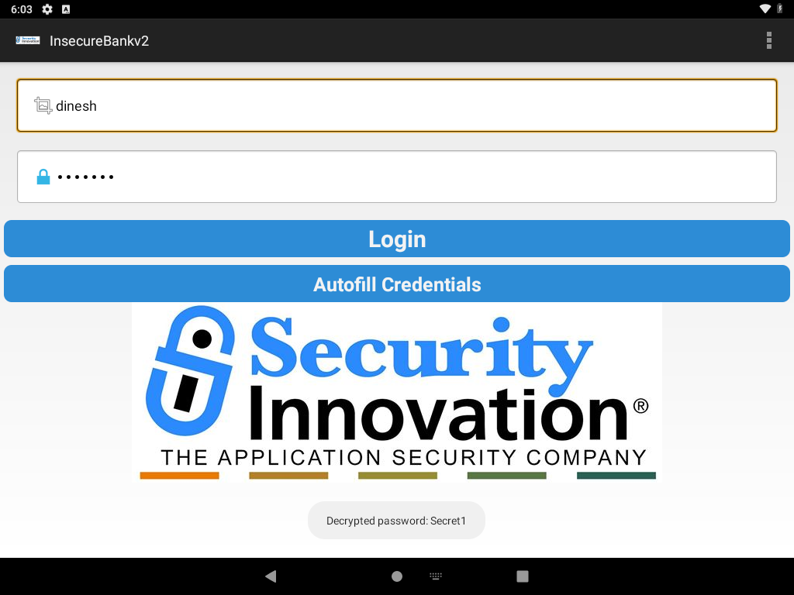
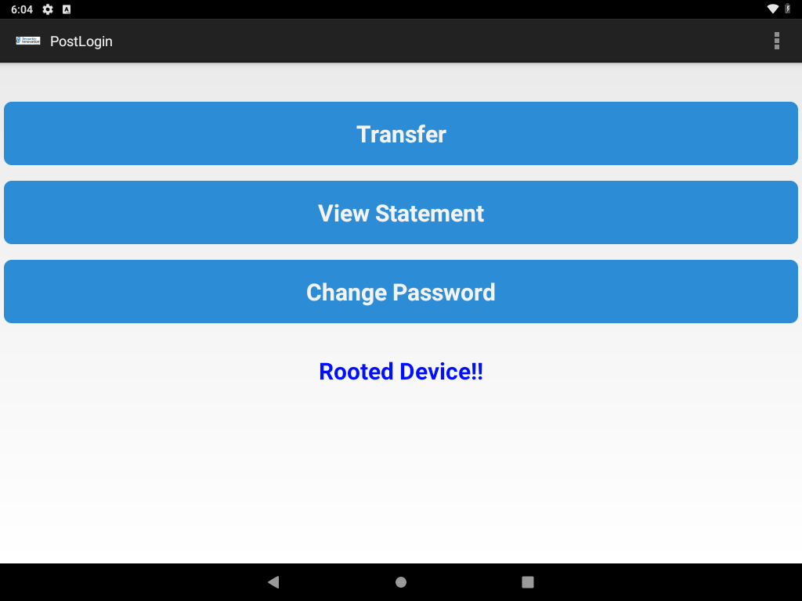

Description
android:debuggable="true" allows the shell user to enter the app uid with adb shell run-as com.android.insecurebankv2 without root. That reads files under /data/data/com.android.insecurebankv2/ that other apps cannot read.
After a login, DoLogin.saveCreds() writes mySharedPreferences.xml:
EncryptedUsernameis the username encoded withBase64(flagCRLF).superSecurePasswordis the password encrypted byCryptoClass.
CryptoClass uses AES/CBC/PKCS5Padding, IV bytes of all zeros, and this 32-byte key from the class:
This is the super secret key 123Anyone who can pull the APK can read that key. Anyone who can run-as (or who has root, or a backup) can read the file. The two together return the plaintext password. The login path also logs it:
Successful Login:: , account=dinesh:Secret1Steps performed
- Confirmed
run-asworks as the app uid and does not usesu:uid=10077(u0_a77) gid=10077(u0_a77) ... context=u:r:untrusted_app_25:s0:c512,c768 - The credential file did not exist yet. The app only creates it after a successful login, and login posts to the server IP stored in preferences. A local stub answered
POST /loginwith the bodyCorrect Credentials. The app treats that substring as success and then stores whatever password was submitted. - Logged in through the real login screen as
dinesh/Secret1. - Read the private file with
run-as, notsu:adb exec-out run-as com.android.insecurebankv2 cat shared_prefs/mySharedPreferences.xml - Base64-decoded the username and decrypted the password with OpenSSL using the key and IV from
CryptoClass. - Attached Frida, hooked
CryptoClass.aesDeccryptedString, and tapped Autofill Credentials. The app decrypted the file and the hook showed the plaintext in a toast.
automated_exploitations/03_debuggable_credentials.py repeats this. On a later run the credential file was removed and the script created it again, including the proxy workaround.
Evidence
Private preference file
Source file: evidence/03_mySharedPreferences.xml — read with run-as, not root.
<?xml version='1.0' encoding='utf-8' standalone='yes' ?>
<map>
<string name="superSecurePassword">8QnuBKkw9irGGem0DR4A1g== </string>
<string name="EncryptedUsername">ZGluZXNo </string>
</map>Recovered values
| Field | Value |
|---|---|
| Username | dinesh (ZGluZXNo is Base64) |
| Ciphertext | 8QnuBKkw9irGGem0DR4A1g== |
| AES key | This is the super secret key 123 |
| IV | 16 zero bytes |
| Password | Secret1 |
Frida hook output
Source file: evidence/03_frida_decrypt.txt
Frida 17.23.3 attached to com.android.insecurebankv2 (frida-server 17.24.1).
Hook: com.android.insecurebankv2.CryptoClass.aesDeccryptedString
Triggered by the login screen button "Autofill Credentials".
KEY=This is the super secret key 123
CIPHER=8QnuBKkw9irGGem0DR4A1g==
PLAIN=Secret1
UI: username field showed "dinesh". Password field showed seven masked dots.
Toast on screen: "Decrypted password: Secret1"
Logcat at login: Successful Login:: , account=dinesh:Secret1Autofill screen

dinesh. The password field is masked (seven dots). The toast says Decrypted password: Secret1.Post-login screen

Rooted Device!! is the app's own root check. It only changes that text.The root check ran and detected this image (/system/xbin/which su resolves su). It only changes that label. It does not block those buttons. The scanner's root-detection items are Info findings about the check existing. They were not one of the three exploited issues, and no bypass was required to reach the credential file.
Original server preference, before the lab change
Source file: evidence/original_server_prefs.xml
<?xml version='1.0' encoding='utf-8' standalone='yes' ?>
<map>
<string name="serverport">8888</string>
<string name="serverip">10.0.2.2</string>
</map>Impact
A person with ADB access to this device, without root, can read the stored account password. The same file is also what MyBroadCastReceiver decrypts when it builds an SMS body. That receiver was not invoked in this test, so no SMS was sent.
The password recovered here is the lab account created for this exercise (Secret1), stored by the app's own saveCreds() path.
Errors and fixes
Login went to 10.0.2.2:8080 and was refused
Logcat:
org.apache.http.conn.HttpHostConnectException: Connection to http://10.0.2.2:8080 refusedThe app's saved server was 10.0.2.2:8888, not port 8080. The device global proxy was http_proxy=10.0.2.2:8080. Apache HttpClient sends the login through that proxy. Nothing was listening: wget from the device to 10.0.2.2:8888 and :8080 returned Connection refused. 10.0.2.2 answers ping on this VirtualBox network and does not accept those TCP ports. The host that does is 10.0.2.4.
settings delete global http_proxy left the app still connecting to 10.0.2.2:8080. This works:
adb shell settings put global http_proxy :0The script saves the previous proxy, sets :0 only when that proxy is unreachable, logs in, and restores it. After the run, settings get global http_proxy was 10.0.2.2:8080 again.
The server preference was changed from 10.0.2.2 to 10.0.2.4, port 8888, so the device can reach the stub. The original file is shown above. run-as cp was able to write the new file because the app is debuggable. Root was not required.
Frida: Java is not defined
Host Frida is 17.23.3 and frida-server on the device is 17.24.1. Enumerating the device and attaching succeeded across that skew. Loading a script that calls Java.perform failed immediately:
ReferenceError: 'Java' is not definedFrida 17 does not ship the Java bridge inside the agent. Fix: crypto_watch.js imports frida-java-bridge, and frida.Compiler bundles it to frida/crypto_watch.bundle.js. The Python script loads that bundle. After that, the hook printed the key and Secret1.
adb exec-out run-as ... cat exits 0 when the file is missing
The stderr text No such file or directory came back with a zero status, so the first version of the script tried to parse it as XML and raised KeyError: EncryptedUsername. Fix: treat a missing <map> or the text No such file as "no credential file" and run the login seed.